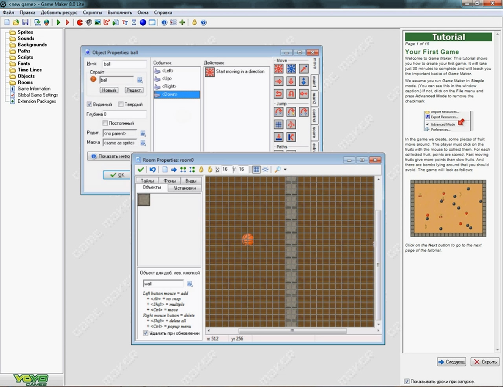
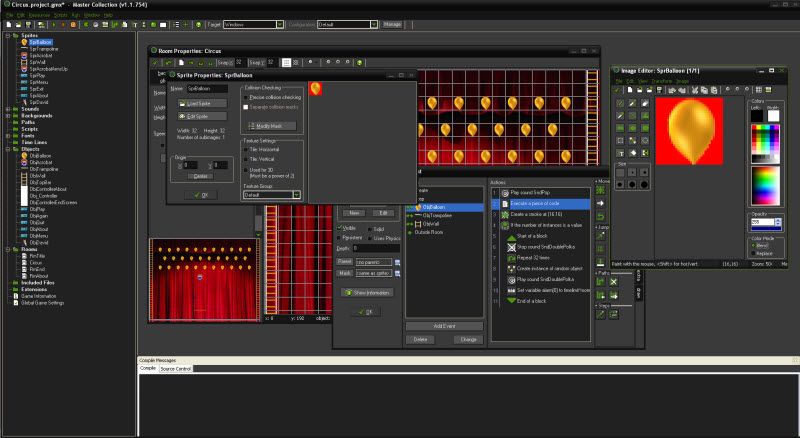
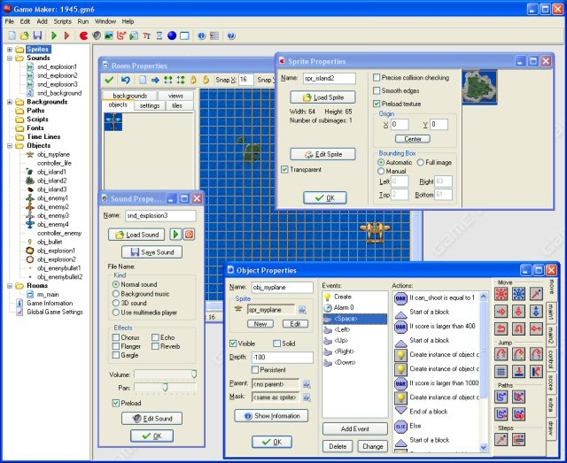
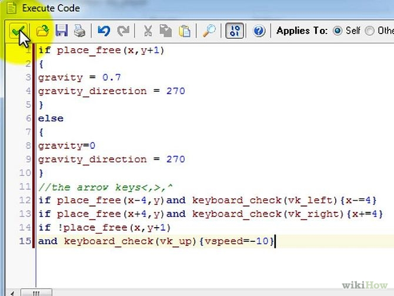

Game Maker

Game Maker — предшественик Game Maker Studio, на котором она основана. Game Maker представляет собой программу для создания 2D игр различного типа и жанра, небольшие 3D шутеры от первого лица. Так же отлично подходит для создания различных презентаций с интерактивным содержанием.
Интерфейс
|  |  |
|  |  |
Плюсы и минусы программы
- + кроссплатформенность;
- + гибкая ценовая категория, базовая версия Game Maker: Studio абсолютно бесплатна;
- + собственный упрощенный язык программирования Game Maker Language (GML);
- + интеграция со Steam;
- + поддержка множества интернет-площадок «из коробки» (Developer Services Portal);
- − плохо оптимизирован для больших игр (эту проблему может частично решить YoYo Compiler);
- − несмотря на возможность работы с 3D, в Game Maker она крайне неудобна;
- − сам Game Maker Language (GML) имеет ряд заметных недостатков, что, тем не менее, не помешает начинающим разработчикам.